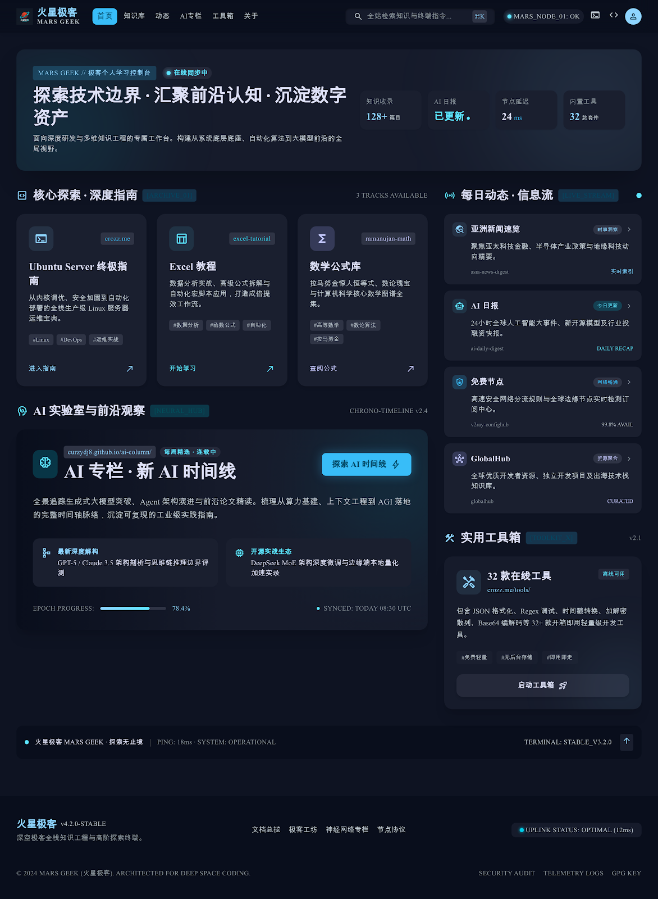

3 套主页设计由 Google Stitch 生成（2026-11-16），均为个人学习门户首页概念稿：左上 Ubuntu Server / Excel / 数学三个学习板块，右上每日动态，左下 AI 专栏，右下工具箱。已定稿设计 2（清爽浅色极简）为主页，其余两套留档对比。

设计 1 · 深色科技风近黑深蓝底 + 青蓝荧光色，顶部导航带搜索框和 UTC+8 时钟，三张学习大卡 + 每日动态订阅流 + AI 专栏 + 32 款工具箱，底部带页脚。最有极客味。
打开预览 Stitch 项目说明：3 套均为首页静态概念稿，卡片上的 9 个链接都是真实地址，点得通。设计 3 里仪表盘上的阅读时长、连续天数、工具调用次数、研读进度这些数字是 Stitch 填的占位数据，定版后换成真实数据或去掉。
已修正一处：设计 3 的 AI 专栏原写“收录 140+ 里程碑”，实际 AI 专栏是 38 条，已改成 38 个。